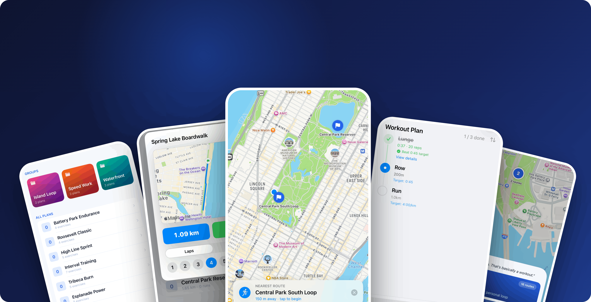

See it in motion
From building a loop to chasing your splits mid-run — here’s what training with surge15 looks like.


surge15 · iOS
A run-tracking app for functional training without a track. Build a fixed running loop, run it anywhere, and watch your times actually drop — no account, and nothing leaves your phone unless you choose to share a route, in which case only its coordinates travel, never anything attached to or traceable back to you.

No track? No problem. surge15 keeps your route actually fixed session to session — so every comparison is a fair one.
Everything you need to train hard and measure real progress — not just another distance counter.
Build a GPS running loop with turn-by-turn directions. A 20-meter start gate and auto-stop keep every lap the exact same distance, so the numbers mean something.
Run multiple laps in a single session and instantly see each split against your personal best and average. Progress you can feel, then prove.
On-screen overlays and haptic buzzes call out every turnaround mid-run — left, right, or around — so you stay on route and on pace, eyes up.
Log the full functional mix — lunges, burpee broad jumps, rows, wall balls, and rest — each tracked in its own units alongside your runs.
Build reusable workout templates — "Run 400m, Lunge 24m, BBJ 10 reps" — and turn any plan into a tracked day with a built-in checklist.
Browse past sessions in a calendar grouped by morning, afternoon, and evening, with active-day markers and quick summaries at a glance.
From building a loop to chasing your splits mid-run — here’s what training with surge15 looks like.
surge15 is private by design — not because of a policy, but because your data never leaves your phone in the first place.
No sign-up, no email, no password. Download the app and start training — there's nothing to log in to and no profile to create.
Your routes, sessions, and times live entirely on your phone. Nothing is uploaded, synced, or backed up to us — the only exception is a route you deliberately choose to share.
The only data the app uses is GPS, purely to measure your run. We never store it and never tie it to you — there's no account or identifier for us to track.
Built a loop worth running? Send it to a training partner — without giving up an ounce of your privacy.
When — and only when — you tap Share, the route's map coordinates are uploaded and you get a short share code to text to anyone. Nothing is ever sent automatically.
Your friend types the code into surge15 and the loop drops straight onto their phone — turns, distance, and all — ready to run.
A shared route carries only its coordinates. No name, no account, no device or network identifiers ride along — so it can never be traced back to who sent it. Codes stop working after 48 hours.